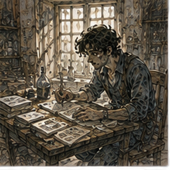
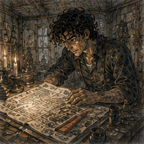
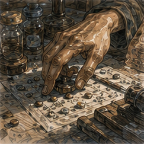

Holl found me before Hessa did.
This was inconvenient because Hessa had an appointment and Holl had a face.
The face said he had results.
I was outside the Guild with half a heel of bread and no pepper stew because I had demonstrated growth.
Holl stopped in front of me.
“Busy?”
“Yes.”
He looked at the bread.
“I have an appointment.”
“When?”
“Later.”
“How much later?”
I considered lying.
This was dangerous after the pepper stall.
“An hour.”
“Come.”
That was not a request.
I went.
Holl did not take me to a table.
This was the first surprise.

He took me to the testing room.
I had seen the front of his operation before. Cheap suppression stock, sorting, certification, people making decisions that looked simple until money depended on them.
The testing room was narrower than I expected.
Two benches.
Fixed reference tiles.
Mana bead.
Sliding tray.
Wedges.
Dust.
More dust.
A bucket containing pieces that had apparently offended someone.
Iris stood at the left bench.
I knew her.
Not well.
Enough.
She glanced at me, then at Holl.
“He watching?”
“Yes.”
“Why?”
“He asks irritating questions.”
Iris nodded.
“Fair.”
The second tester was a man I recognized from Holl's shop and had never named.
Good.
Holl pointed at a chair against the wall.
“Sit.”
“I can stand.”
“No.”
This was spreading.
I sat.
My residual limb was less swollen than yesterday morning.
Not baseline.
Closer.
Hands fine.
Hessa later.
Holl put a slate in my lap.
Six columns.
No explanation.
I looked.
Tester.
Piece.
Clear.
Ambiguous.
Holl check.
Result.
Then marks.
Lots separated.
Same lot.
Good.
“You did it.”
Holl grunted.
“How many?”
“Enough to annoy everyone.”
Iris said, “Not enough to annoy him.”
She meant me.
Correct.
I looked at the slate.
“Where are the returns?”
“Not here.”
“Why?”
“Because today you're watching.”
I looked up.
Holl had changed the question.
Or postponed it.
“Watching what?”
He pointed at Iris.
She picked up a piece of cheap kestrin suppression stock.
Not sinkstone.
Ordinary stock.
Important distinction.
She set it against the fixture.
Flattest side.
Small wedge under one edge.
Mana bead.
Reference.
Slide.
Pause.
Decision.
Piece into left bin.
Next.
Fast.
The other tester worked slower.
Not dramatically.
Enough.
He repositioned twice where Iris repositioned once.
He looked longer at the reference.
Piece into middle bin.
Next.
I watched.
After four pieces I had an opinion.
After six I improved it.
After eight I distrusted both opinions.
Good.
Iris picked up a piece, seated it, tested, frowned, shifted the wedge, tested again.
Then put it into the bucket.
Ambiguous.
Holl made a mark.
The other tester took a similar amount of time on his next piece and put it into the left bin.
I looked at Holl.
He ignored me.
I looked at the slate.
No piece numbers I could match from where I sat.
Annoying.
Iris tested three more.
Clear.
Clear.
Ambiguous.
The other tester tested three.
Clear.
Clear.
Clear.
There it was.
Too loose.
Maybe.
No.
That was exactly the conclusion Holl had wanted to test.
I waited.
This was difficult.
After perhaps twenty minutes, Holl stopped them.
“Swap.”
Iris moved right.
The other tester moved left.
Same fixture?
No.
Different benches.
Different reference tiles.
Different dust.
I sat forward.
Holl looked at me.
“Don't.”
“I didn't say anything.”
“You moved.”
Everyone could apparently read posture now.
I sat back.
They continued.
Iris was still faster.
Less difference.
She flagged another ambiguous piece.
Then another.
The other tester flagged one.
Holl checked all three.
He returned one of Iris's to clear.
Kept one ambiguous.
Returned the other tester's to clear.
I wanted the slate.
It was already in my lap.
I wanted a better slate.
After another twenty minutes Holl stopped them again.
“Done.”
Iris stretched her hands.
The other tester wiped dust from the fixture.
Neither looked at me.
This was their work.

I had been furniture.
Good.

Holl collected the pieces he had sampled from the clear bins.
That was the part from our earlier conversation.
Do not only recheck ambiguity.
Sample clear calls too.
He put six pieces on his bench.
Three from each tester.
He did not tell me which.
Better.
He checked them.
Slowly.
One.
Two.
Three.
Four.
On the fifth he stopped.
Retested.
Changed wedge.
Retested.
Looked at the reference tile.
Then set it aside.
“What?” I asked.
Holl ignored me.
Sixth.
Clear.
He went back to the fifth.
Iris watched now.
So did the other tester.
Holl tested it again.
Then said, “Wrong band.”
Nobody reacted dramatically.
I wanted to know whose.
Holl wrote something.
Then he handed me the slate.
“Now.”
I looked.
The wrong clear call was Iris.
There it was.
Holl's original concern.
I felt the answer arrive.
Too loose.
One wrong clear call in the sample.
More ambiguity.
Faster throughput.
Iris was trading accuracy for speed.
Clean.
Plausible.
Wrong.
Probably.
I looked at the totals.
“How many clear calls did you sample across the full run?”
Holl pointed to the bottom.
I had missed the second slate mark.
Twenty-four each.
“One wrong clear from Iris?”
“Yes.”
“Other tester?”
“One.”
I looked again.
Different day.
Different piece.
Same lot.
One each.
Not evidence of Iris being looser.
At least not much.
“Ambiguous?”
“Iris flags more.”
“Yes.”
“Throughput?”
“Faster.”
“Yes.”
“Holl time?”
He pointed.
Iris consumed more of it.
There.
That mattered.
Maybe.
I looked at Iris.
She was cleaning the fixture.
Not waiting for judgment.
Good.
“What happens to the pieces she flags ambiguous?”
Holl said, “I check them.”
“All?”
“Most.”
“And if you weren't here?”
“Depends.”
“On?”
“Who is.”
Not useful.
Also useful.
I looked at the slate again.
The experiment had answered the original question poorly.
Or answered it.
“She's not obviously too loose.”
Holl grunted.
Iris said, “Obviously?”
I looked at her.
“That was not an insult.”
“It sounded like one.”
“I mean the data does not show a meaningful excess of wrong clear calls.”
“Meaningful.”
“Yes.”
“Better.”
She went back to cleaning.
Holl leaned against the bench.
“What does it show?”
I looked at the numbers.
“She is faster.”
“Yes.”
“She flags more ambiguity.”
“Yes.”
“She uses more of your recheck time.”
“Yes.”
“Her sampled clear-call error is not worse here.”
“Yes.”
“So the cost is expert time.”
Holl's face did not change.
I stopped.
Maybe.
Again.
“The visible cost is expert time.”
“Better.”
I hated everyone.
“What else?”
Holl pointed at the benches.
I looked.
Two fixtures.
I had noticed the swap.
“Bench effect.”
“Maybe.”
“Did performance change after swap?”
“A little.”
“Both?”
“Yes.”
“How?”
He handed me another slate.
Of course there was another slate.
Iris slowed on the right bench.
The other tester sped slightly on the left.
Ambiguity changed too.
Not enough data.
Still.
“Fixture.”
“Maybe.”
“Reference tiles.”
“Maybe.”
“Dust.”
“Maybe.”
“Wedge behavior.”
“Maybe.”
Iris said, “The right tray sticks.”
I looked at her.
Holl looked at her.
She shrugged.
“It sticks.”
“How long?”
“Always.”
The other tester said, “Not always.”
“Most days.”
“Only when dirty.”
“It is always dirty.”
Holl closed his eyes.
I smiled.
This was excellent.
Not for Holl.
For reality.
He opened his eyes.
“Why didn't you write that?”
Iris looked genuinely confused.
“You asked ambiguous pieces.”
There it was.
The room became larger.
Not physically.
The experiment had been designed around the decision Holl thought he was making.
Is Iris too loose?
Same lot.
Split pieces.
Track ambiguity.
Sample clear calls.
Measure throughput.
Measure Holl time.
Good design.
Still incomplete.
Because the process included benches.
And one tray apparently had a personality.
I looked at the fixture.
“Do not redesign it,” Holl said.
“I wasn't.”
“You were.”
“I was looking.”
“You redesign with your eyes.”
Iris laughed.
Traitor.
I looked at the slate.
“What do customers actually complain about?”
Holl frowned.
“Returns.”
“No. Words.”
He understood.
“Wrong band. Weak suppression. Sometimes too strong.”
“Do they identify tester?”
“No.”
“Lot?”
“Yes.”
“Bench?”
“No.”
“Of course not.”
I looked at the pieces.
The wrong clear call Holl had found was not a return.
It had been caught only because we sampled clear calls.
That meant returns were incomplete.
We knew that.
But now the room showed why.
A worker could be careful and the fixture could drift.
A worker could be fast and consume expert time.
A worker could flag ambiguity because the tray stuck.
Or because the pieces were actually ambiguous.
Or because she noticed more.
Or because she was worse at deciding close ones.
Several stories fit.
I wanted a larger experiment.
This was the trap.
I felt it.
More columns.
Bench.
Reference tile.
Tray condition.
Dust.
Wedge.
Piece orientation.
Time of day.
Moon phase if sufficiently desperate.
Eventually the measurement system became more expensive than the stone.
Holl watched me.
“What?”
“Nothing.”
“That's new.”
“I am deciding not to say something.”
Iris said, “Write down the date.”
I ignored her.
Holl waited.
I said, “What decision do you need now?”
His expression changed slightly.
Good.
“Whether to change how Iris works.”
“Do you?”
“I don't know.”
“Then don't.”
Iris looked at me.
I raised a hand.
“Not forever.”
“Good.”
“To answer that, I think you need less than I want.”
Holl nodded once.
That was permission.
“Track bench with the same fields for a few more days.”
“How many?”
“I don't know.”
“Useful.”
“Enough that each tester uses both benches repeatedly. Do not change the fixture yet. If you change it, you lose the chance to see whether the bench is part of the pattern.”
Holl looked at the sticky tray.
Iris looked pleased.
Probably because she had complained about it before.
“Then what?” Holl asked.
“If the bench effect persists, you have a fixture problem or at least a fixture question. If it doesn't, you have noise. If Iris still flags more ambiguity across both benches but doesn't produce more wrong clear calls, then 'too loose' is probably the wrong description.”
“What description?”
“I don't know.”
Iris said, “Fast.”
The other tester snorted.
She looked at him.
“Faster.”
He shook his head.
Holl said, “And my time?”
“That may be the real cost.”
“May.”
“Yes.”
He looked disappointed.
Good.
He had taught me that.
“How much do I owe you?” he asked.
I looked at the clock mark scratched near the door.
Not a clock.
Sun line.
I had less time than I thought.
“Hessa.”
Holl looked at me.
“Appointment.”
“Go.”
“How much?”
“Later.”
He stared.
I realized what I had said.
Not optimizing.
Not invoicing.
Not even deciding whether this counted as paid consultation before leaving.
Interesting.
No.
No time.
I handed him the slate.
Iris called after me.
“Thinking boy.”
I stopped.
That was spreading too.
“What?”
She pointed at the right bench.
“Tray sticks.”
“I believe you.”
“Tell him.”
“He heard you.”
Holl said, “I heard her.”
Iris looked unconvinced.
I left.
Outside, I planted both crutches and moved quickly enough to regret it after half a street.
Not pain.
Effort.
Right leg.
Hands.
Breath.
I slowed.
Hessa would rather I arrive late than arrive stupid.
Probably.
I was not late.
Barely.
At her door I paused.
My residual limb felt no worse.
Good.
My hands were warm.
Fine.
My brain was still in Holl's testing room.
Less good.
I knocked.
Hessa opened the door.
“You're thinking about something else.”
“Yes.”
“Good.”
I blinked.
She stepped aside.
“Maybe you'll stop trying to help.”
I went in.
Unlikely.